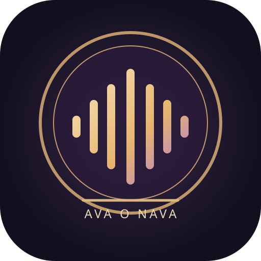

مسابقه آوا و نوا
در رشتههای آواز، شعرخوانی و دکلمه شرکت کن.
ثبتنام در مسابقه ↗موسیقی زنده، شعر، آواز و دکلمه؛ دور هم جمع میشویم تا لحظههای شنیدنی بسازیم.
LIVE RADIO
هر شب کنار شما
OUR PROGRAMS
زمانها بهصورت خودکار برای ایران، سوئد و انگلیس محاسبه میشوند.
MUSIC COLLECTION
سبک دلخواه و خواننده مورد علاقهات را انتخاب کن.
در این دستهبندی قطعه قابل پخشی پیدا نشد.
NOW SELECTED
برای پخش از پلیر رسمی استفاده کن.
RADIO REPLAYS
اگر برنامهای را از دست دادی، اینجا دوباره بشنو.
در حال انتخاب
آرشیو رادیو آوا و نوا
از فهرست، برنامه را انتخاب کن.
JOIN OUR COMMUNITY
با ما همراه شو، در مسابقه شرکت کن و از برنامههای بعدی باخبر باش.
در رشتههای آواز، شعرخوانی و دکلمه شرکت کن.
ثبتنام در مسابقه ↗در گفتوگوها و برنامههای زنده همراه باش.
ورود به کلابهاوس ↗از تلگرام و کانال واتساپ، برنامههای آینده را دنبال کن.
RADIO IN YOUR POCKET
سایت را به صفحه اصلی آیفون یا اندروید اضافه کن. نصب رایگان است و نیاز به فروشگاه اپلیکیشن ندارد.
